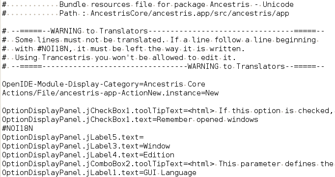

A bundles package (or bundles file) is a zip file which
contains all the sentences you have to translate
using Trancestris.
Its name is "Ancestris_Bundles.zip".
A Bundle is a language file. Each language has its appropriated
bundle files. For example, a greek bundle file is named
"Bundle_el.properties", a swedish
bundle is named "Bundle_sv.properties",
a french one "Bundle_fr.properties",
etc. The main one is the english one, named
"Bundle.properties"
(it's Bundle.properties and not Bundle_en.properties).
Of course, you don't have to take care of that, Trancestris
will do it for you.
How a bundle file looks like?
You don't have to edit it using an external editor. You can of
course, but no need to do so. Trancestris is there for you. Just
for your information, this is a screen capture of part of the
english bundle file (Bundle.properties) we can find in the
AncestrisCore/ancestris.app/src/ancestris/app
directory.

Each subdirectory of the source repository has bundles files
for each language.
For example the
AncestrisCore/core/src/ancestris/core
directory has the Bundle.properties, Bundle_fr.properties,
Bundle_sv.properties, Bundle_fi.properties, etc... files.
the AncestrisCore/core/src/ancestris/core/actions
directory has also Bundle.properties, Bundle_fr.properties,
Bundle_sv.properties, Bundle_fi.properties, etc... files.
When Trancestris starts, it will query the Ancestris/Trancestris
repository where the bundles package is stored. If a new one is
available you will be warned that a new bundle package is
available and you will be asked whether or not you want to
download it.
The following explanations are important, please read them
carefully ;-)
Here are some tips it's good to know.
|
|
|